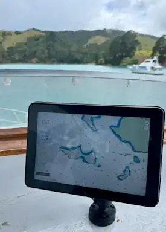

Where ancient mariners read the stars, you harness precision data. The Orca system unites a sunlight-readable waterproof display, intelligent routing and your vessel's instruments into one seamless oracle of the sea.
A purpose-built navigator born from the Norwegian fjords
Born from the frigid, unforgiving waters of Norway's coastline, the Orca Display 2 is not merely a tablet — it is a sentinel of the sea. Engineered to operate where ordinary devices surrender, it remains legible under blazing equatorial sunlight, shrugs off salt spray with waterproof serenity, and endures temperature extremes that would silence lesser machines.
At the heart of the system lies the Orca CoPilot app, an intelligence that speaks the language of wind, current and tide fluently. It combines official hydrographic charts from national institutes with live weather data harvested from eight independent meteorological services — the Danish, Norwegian and Swedish regional models among them — to weave a forecast of extraordinary regional precision.
The Orca Core bridges the digital and physical realms: a compact GNSS receiver with a 9-axis IMU, connecting to your vessel's NMEA 2000 network via Bluetooth or Wi-Fi. Through it, the app gains access to depth, wind speed, heading and engine data. The result: a cockpit command centre that knows where you are, where the wind blows, and how your hull slices the swell.

Nautical charts sourced directly from official hydrographic institutes, rendered with a restrained colour palette that throws hazards and sea-marks into sharp relief. Shallow water glows amber; deep channels breathe dark.
Sail routing powered by 7,000+ ORC polar diagrams calculates optimum tack angles, leg distances and ETAs in under 30 seconds across passages of 300+ miles. Wind arrows march along every waypoint like a spectral crew.
Compatible with Garmin, Raymarine and B&G steering systems, the app can command all standard autopilot modes directly from the chart screen — heading hold, wind mode and route following — without lifting a hand from the wheel.
An onboard AIS receiver feeds vessel traffic into the chart in real time. When offshore connectivity allows, MarineTraffic data adds a ghostly constellation of ships across the horizon before they even appear in your binoculars.
A deep red night display preserves your hard-won dark adaptation. The interface dims to embers while every buoy, shipping lane and waypoint remains perfectly readable — your eyes belong to the sea, not the screen.
CoPilot runs on any modern iPad or Android tablet. The Orca Display 2 offers a hardened, waterproof option; your old iPad Air serves equally well as a backup — a redundancy that professional offshore sailors demand.
| Attribute | Detail |
|---|---|
| Display | 10.1″ IPS, 1920 × 1200, sunlight-readable |
| OS | Android (hardened) |
| Waterproofing | IPX7 — submersible to 1 m |
| Connectivity | Wi-Fi, Bluetooth 5, USB-C |
| GNSS | GPS, GLONASS, Galileo, BeiDou |
| Temperature | −10 °C to +60 °C operating |
| Battery | 8,000 mAh — full day underway |
The palm-sized Core unit translates your vessel's instrument bus into wireless intelligence. A precision GNSS antenna with a 9-axis inertial measurement unit furnishes heading, heel, pitch and GPS data simultaneously, eliminating the blind spots of earlier mobile navigation solutions.
Connecting to the NMEA 2000 backbone, it surfaces depth, speed through water, wind angle and engine RPM inside the app — the very data that salty navigators once read from analogue dials, now flowing silently through the ether into your palm.
All charts are cached locally for offshore passages. Weather routing requires an internet connection; standard auto-routing and manual waypoint placement work fully offline — ensuring safe passage beyond the reach of cellular towers.
Explore the depths of knowledge that guide true mariners
Master the art of the sail — from reading the wind to perfecting your tack in heavy weather.
Charts, GPS, routes and AIS — the science and intuition of finding your way across open water.
Passage planning, anchorages and the quiet poetry of days spent far from sight of land.
Marine electronics, polar diagrams, tides and the deep lore of the sea that no chart can contain.